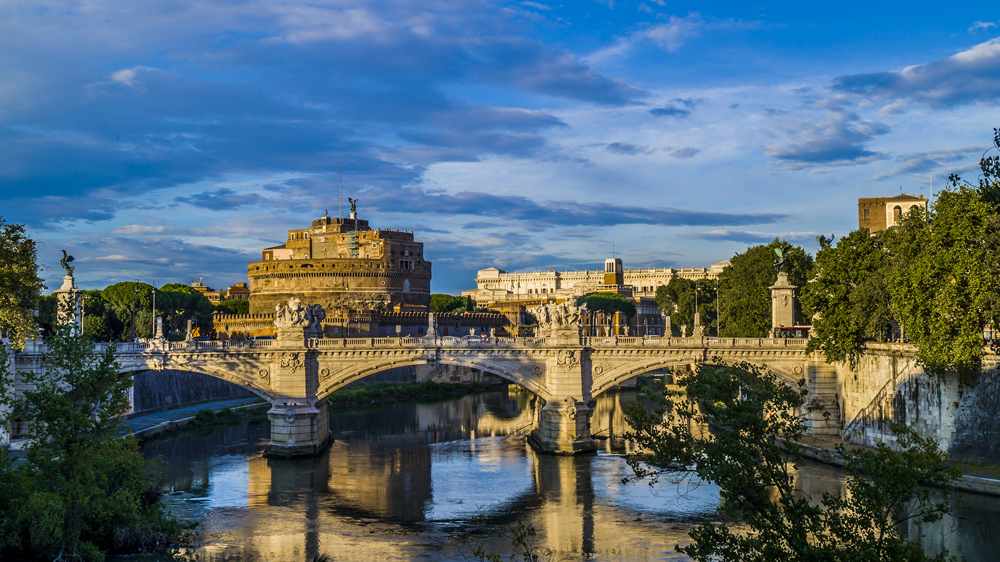

Roma
罗马
永恒之城 · 三层历史叠在同一张地图上
传说公元前 753 年罗慕路斯在帕拉蒂尼山建城；此后两千八百年，这座城市把古罗马的混凝土、文艺复兴与巴洛克的大理石、以及现代意大利的烟火气，全部叠进了台伯河两岸的街区里。在罗马，一个街角同时属于凯撒、米开朗基罗和今天的摩托车。
这座城市的关键词是“幸存”：万神殿因为变成教堂活了下来，斗兽场因为“殉道者圣地”的名分停止被拆，贝尼尼的喷泉至今在市长办公室窗外上班。罗马不供奉历史--它就直接住在历史里。
建城公元前 753 年（传说）
人口约 280 万
大区拉齐奥 Lazio
10 月气温12-22°C
机场FCO 菲乌米奇诺 / CIA 钱皮诺
中央车站Roma Termini
城市速览
- 历史中心（万神殿-纳沃纳-鲜花广场）全步行可达
- 地铁仅 A/B/C 三线，很多景点靠公交与步行
- 特拉斯提弗列 Trastevere：晚餐与夜生活的本地人街区
- Testaccio 美食区：罗马菜的正宗原点
顺路推荐
- 蒂沃利 Tivoli：哈德良别墅 + 千泉宫（火车 1 小时）
- 奥斯提亚古城 Ostia Antica：罗马的“庞贝”（地铁可达）
- 卡比托利欧山黄昏：俯瞰古罗马广场的免费观景台
- 犹太区：罗马最古老的连续社区与最好吃的炸洋蓟
景点导览
Da Vedere · 11 处
古迹
罗马斗兽场Colosseo / Anfiteatro Flavio
罗马古城必看之首：五万观众的欢呼、角斗士的生死，与一座被拆了千年的建筑

古迹
古罗马广场Foro Romano
两千年前的市政厅、法院、证券交易所与神庙——罗马共和国的心脏废墟

古迹
帕拉蒂尼山Palatino / Palatine Hill
罗马建城传说的发生地，也是“宫殿”一词（Palace）的出生地

古迹
万神殿Pantheon
两千年不倒的混凝土穹顶，至今仍是世界最大无筋混凝土穹顶

美术馆
博尔盖塞美术馆Galleria Borghese
贝尼尼大理石魔法浓度最高的地方——石头在他手里会呼吸

城堡
圣天使堡Castel Sant'Angelo
从皇帝陵墓到教皇堡垒再到监狱——一座建筑干遍了罗马的全部行当

古迹
卡拉卡拉浴场Terme di Caracalla
能同时接待 1600 人的古代“市民中心”——洗澡只是顺便

古迹
阿皮亚大道Via Appia Antica
“条条大路通罗马”——这句谚语说的就是脚下这条公元前 312 年的路

广场
纳沃纳广场Piazza Navona
巴洛克艺术的露天博物馆——广场本身是一件雕塑作品

喷泉
许愿池Fontana di Trevi
每天被投进 3000 欧硬币的巴洛克剧场——也是罗马水质工程的纪念碑

广场
西班牙阶梯Scalinata della Trinità dei Monti
137 级台阶的“罗马客厅”——济慈在这里度过人生最后一个春天
实用贴士
Consigli
- 地铁单程 €1.50，100 分钟内可换乘公交；Roma Pass 视行程性价比一般
- 全城自来水可直饮：街头铸铁“小鼻子”喷泉 nasoni 是罗马的免费饮料站
- 进教堂硬规矩：不露肩、不过膝（随身带条轻围巾解决一切）
- 周一不少博物馆闭馆（博尔盖塞、卡拉卡拉浴场等），排行程先查周一
- 扒手高发：Termini 车站、64/40 路公交、斗兽场与许愿池周边；背包前置
- 出租车只坐白色正规车（起步约 €4-6），拒绝车站口“拼车”邀约
- 旺季 8 月酷热且市民出城度假，10 月是光线与气温的双重甜点期